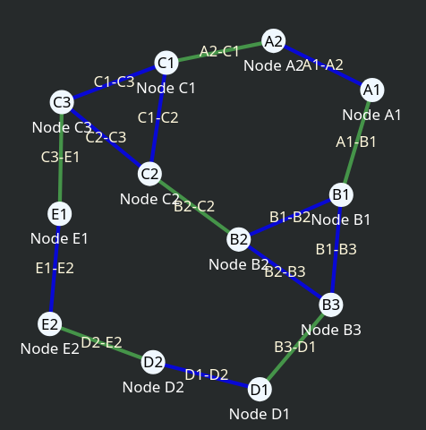

Короткий опис роботи
Робота присвячена розробці практичних засобів для створення децентралізованої бездротової mesh-мережі з використанням застарілих Wi-Fi роутерів. Дослідження включає встановлення OpenWrt, налаштування протоколу маршрутизації batman-adv та оцінку продуктивності мережі в умовах симуляції. Також робота включає розроблення допоміжних програмних засобів розгортання, оновлення тощо.

Актуальність теми
У сучасних умовах обмеженого доступу до нового обладнання та необхідності розгортання мереж у віддалених або складних локаціях, використання старих роутерів для побудови mesh-мереж є економічно вигідним і екологічним рішенням. Робота спрямована на теоретичну та практичну реалізацію такої системи.
Мета та завдання дослідження
Мета:
Розробити та дослідити засоби побудови стабільної mesh-мережі на базі застарілого обладнання з використанням відкритих рішень.
Основні завдання:
- Проаналізувати існуючі протоколи mesh-мереж (batman-adv, OLSR, yggdrasil).
- Налаштувати OpenWrt на тестових роутерах.
- Розгорнути та протестувати mesh-мережу з протоколом batman-adv у симуляції.
- Провести вимірювання продуктивності, затримки та покриття мережі у симуляції.
- Розробити рекомендації та програмне забезпечення для розгортання та супровіду такої системи.
Методологія дослідження
У роботі застосовується експериментальний метод. Було використано як фізичні тести на реальному обладнанні, так і тестування в симуляції, програмне забезпечення OpenWrt та інструменти моніторингу мережі.
Очікувані результати
Працююче ПО для розгортання та супровіду такої системи та рекомендацій для подальшого використання.
Контактна інформація
Автор: Стеблина Юрій
Повний текст роботи: GitHub — mesh-project